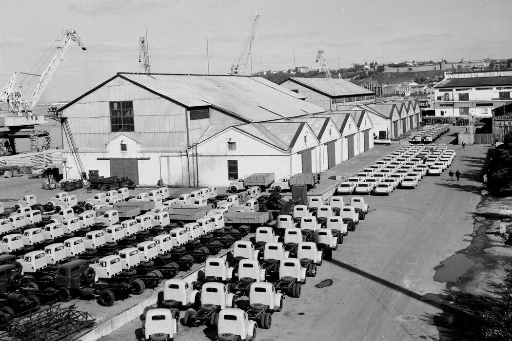

Пакгаузы

Уникальные металлические каркасы были изготовлены на Санкт-Петербургском металлическом заводе для Главного здания XV Всероссийской промышленно-художественной выставки 1882 года в Москве. В 1896 году конструкции перевезли в Нижний Новгород для XVI Всероссийской выставки. Городской голова Д.В. Сироткин выкупил каркасы, их обложили кирпичом и приспособили под склады на Сибирских пристанях. Из восьми павильонов Всероссийских выставок уцелели только два.
В советский период
Больше ста лет металлические конструкции — чугунные колонны и стальные арки — были скрыты за стенами портовых ангаров. В советское время пакгаузы входили в закрытую зону порта: здесь хранились зерно, стройматериалы, промышленные грузы. Во время войны через них проходили военные поставки. О «стальном кружеве» внутри не подозревали даже работники порта. Обнаружили конструкции случайно в 2015 году при расчистке территории к ЧМ-2018.
Сегодня
Первый пакгауз стал выставочным пространством. Второй — концертным залом на 430 мест, спроектированным архитектором Сергеем Чобаном: зеркальные здания встроены внутрь исторических конструкций, не нагружая их. Прозрачная стена за сценой открывает вид на Волгу.